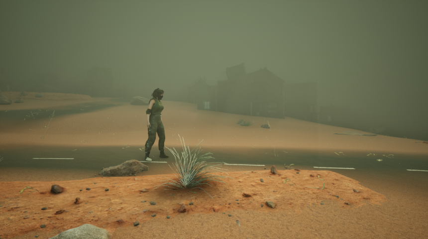

Team-Based Academic Project
Role:
Tools:
Game Designer, Lead Programmer, Narrative Designer (joint), 3D Environmental Designer
Unreal Engine 5, Blender, Figma, Adobe After Effects
Date:
Spring 2024
Link:
https://www.youtube.com/watch?v=FhP72CFiqYAResponding to the current and wide-ranging effects of deforestation, biodiversity and habitat loss, increased global temperatures, soil erosion and flooding - Timber is a puzzle based video game where players can experience first-hand the disastrous effect of what a world without trees might look like. Timber is a 2.5D side-scrolling puzzle platformer video game set on Earth where all trees have recently disappeared. Depicted through a cinematic trailer the project showcases several desolate environments featured in the game, alongside gameplay illustrating the widespread natural hazards caused by deforestation. Demonstrating the gameplay experience, the project aims to expose players to the deep-rooted issues caused by the disappearance of trees, and the catastrophic effects on the planet should deforestation continue to worsen. The game follows the protagonist, a young girl wearing an oxygen mask, must navigate through a hazardous world and survive among the many challenges she will face as a result of this devastated environment. To depict the impacts of deforestation in a realistic yet exaggerated manner, we drew upon resources that describe the effects of a world without trees. Timber was created over the span of four months within a team of two, Erin and myself. While many responsibilities were shared such as narrative design, we each had individual main roles as follows: My main roles were game designer, lead programmer, and #D environmental designer, where as Erin’s were project manager, lead level designer, and sound designer.
One of first stages in our process was to conduct research on deforestation and its effects on the planet. This included reading online articles, listening to podcasts on deforesting myths, and videos that discussed a treeless wold to determine what we wanted to depict in the game. From our research we were able to brainstorm more specific aspects of our game such as the narrative design, game world, character design, and gameplay. As this was an intensive semester long project, it followed a very iterative process, through which the project changed form many times. Though our original deliverable was intended to be a fully playable game, due to time constraints and the scope of the project, we decided to create a cinematic trailer as our final deliverable. We used a Figma document to organize all aspects brainstorming and organization for our project. Once we had a narrative in place, we began planning out game world out - which we selected would feature a green/tan colour palette filled with atmospheric fog, aiming to capture a polluted and toxic world. This allowed me to start creating the main locations we wanted to showcase within Unreal Engine 5 which can be seen in the figures below.

Figure 1: Screenshot of some of our endings brainstorming
Figure 2: Screenshot of initial environment testing
Figure 3: Screenshot of final environment design
Figure 1 shows my initial creation - which we eventually adjusted to figure 2 where we desaturated the colours and increased the atmospheric fog. This location was meant to showcase a destroyed suburban area.
Figure 4: Initial design for warehouse environment
Figure 5: Redesigned warehouse environment
Figure 3 and 4 shows my design of the factory, which was a very crucial location within our cinematic trailer in order to convey both the antagonist (robots) and its scale. My initial design is shown in the top photo, which we decided against as it did convey the scale of a factory. Overall darker lighting, high ceilings, high stairs at the back, and large factory parts helped to convey the large size of the building and purpose. To showcase the scale of the robots I broke apart our robot model into individual parts and stacked them on the sides.
The following figures show some of the other main environments I created for Timber. I used an orange sandy/dried up surface for the ground to showcase the lack of life and help to show cases of soil erosion. The water in figure 7 and 12 is used to highlight the flooding and toxic water effects caused by deforestation. I used a very green tinted water here to help convey its toxicity.
Figure 6: Chopped down forest
Figure 7: Flooded suburbs
Figure 8: Abandoned suburbs
Figure 9: Clifface with soil erosion
Figure 10: Soil eroded boulders in river
Figure 11: Old parking lot
Figure 12: Flooded gas station
Figure 13: Original downloaded 3D model
Figure 14: Final modified character model
Over the course of this project, the end goal of Timber rapidly changed from our original project proposal and vision. Throughout the process of research, and prototyping it quickly became apparent that our initial proposal for Timber was far too large for the scope of the course, which was 13 weeks. This was a critical learning point for us as a team as this project required us to learn a lot of new software and skills, along with points where we got delayed in fine-tuning of narrative. In hindsight I think one aspect we needed to start earlier was actual development of the project, as this allowed us to find key points that were working or not in the overall gameplay and narrative.
Throughout the process, one of the parts of the project I found most challenging was modifying our 3D models - specifically for the main character, and creating animation rigs. Coming into this project I had no prior experience with 3D modeling of people and animation, so these parts took a lot of time for me to create. Figure 12 below shows the original model we downloaded from Sketchfab on the left, and the final modified model on the right. Given more time, I would have liked to create a model from scratch for our protagonist or at the very least modify her further to ensure she fits more into the game world. However it was an incredible learning experience, and I was able to come out of this project with foundational skills and understanding of animation, rigging and 3D character modeling. Despite the many pivots and challenges we faced throughout this project, as a team we created a project we were truly proud of and felt showcased some of the key work we did as well as paved the way for a continuation of this project in the future.